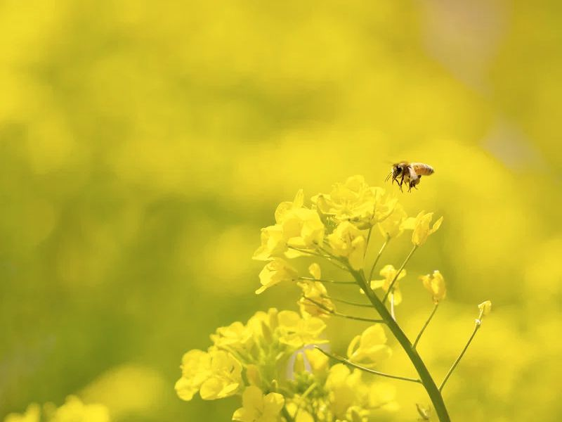

Кремовый мёд — это мёд с мелкими кристаллами, который выглядит как густой крем и легко намазывается. Его можно сделать самому.
Когда мёд кристаллизуется сам, кристаллы бывают разного размера, и консистенция получается неровной. В кремовом мёде кристаллы мелкие и однородные, поэтому он мягкий, белесый и однородный, как паста. Вкус у него тот же, меняется только текстура.
Лучше всего для кремования подходят сорта, которые и так быстро кристаллизуются: рапсовый мёд и подсолнуховый мёд. Акациевый мёд кристаллизуется медленно, поэтому кремовать его сложнее.
В плотно закрытой банке, в прохладном месте. Если мёд расслоится, перемешайте его. Правила хранения: «Как хранить мёд».
Затвердевший мёд может быть крупнозернистым и твёрдым, а кремовый однородный и мягкий по всей банке. Подробнее о кристаллизации: статье о кристаллизации.
Вредит ли кремование мёду?
Нет, состав не меняется, меняется только текстура.
Можно ли растопить кремовый мёд?
Можно: в тёплой водяной бане, не выше 40 °C, но потом он снова загустеет.
Нужен ли специальный инвентарь?
Нет, достаточно банки, ложки и прохладного места.